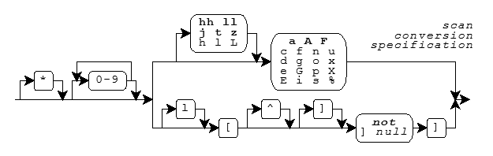

Scan Formats · Scan Functions · Scan Conversion Specifiers
Several library functions help you convert data values from
text sequences that are generally readable by people to
encoded internal representations. You provide a
format string as the value of the
format argument to each of these functions, hence
the term formatted input.
The functions fall into two categories:
The byte scan functions
(declared in
<stdio.h>)
convert sequences of type char to internal representations,
and help you scan such sequences that you read:
fscanf,
scanf,
sscanf,
vfscanf,
vscanf, and
vsscanf.
For these function, a format string is a
multibyte string
that begins and ends in the
initial shift state.
The wide scan functions
(declared in
<wchar.h>
and hence added with
Amendment 1)
convert sequences of type
wchar_t,
to internal representations,
and help you scan such sequences that you read:
fwscanf,
wscanf,
swscanf
(added with C99),
vfwscanf
(added with C99),
vwscanf, and
vswscanf
(added with C99).
For these functions, a format string is a
wide-character string.
In the descriptions that follow, a wide character wc
from a format string or a stream is compared to a specific (byte)
character c as if by evaluating the expression
wctob(wc) == c.
A format string has the same general syntax for the scan functions as for the print functions: zero or more conversion specifications, interspersed with literal text and white space. For the scan functions, however, a conversion specification is one of the scan conversion specifications described below.
A scan function scans the format string once from beginning
to end to determine what conversions to perform. Every scan
function accepts a
varying number
of arguments, either directly or under control of an argument of type
va_list.
Some scan conversion specifications
in the format string use the next argument in the list.
A scan function uses each successive argument no more than
once. Trailing arguments can be left unused.
In the description that follows, the integer conversions and floating-point conversions are the same as for the print functions.
For the scan functions, literal text in a format string must
match the next characters to scan in the input text.
White space in
a format string must match the longest possible sequence of the next
zero or more white-space characters in the input. Except for the
scan conversion specifier
%n
(which consumes no input), each
scan conversion specification
determines a pattern that one or more of the next characters in the
input must match. And except for the
scan conversion specifiers
c,
n, and
[,
every match begins by skipping any
white space characters in the input.
A scan function returns when:
A scan function returns
EOF
if an input failure occurs before any conversion. Otherwise it returns
the number of converted values stored. If one or more characters form
a valid prefix but the conversion fails, the valid prefix is consumed
before the scan function returns. Thus:
scanf("%i", &i) consumes 0X from field 0XZ
scanf("%f", &f) consumes 3.2E from field 3.2EZ
A scan conversion specification typically converts the matched input characters to a corresponding encoded value. The next argument value must be the address of an object. The conversion converts the encoded representation (as necessary) and stores its value in the object. A scan conversion specification has the format shown in the diagram.

Following the percent character (%)
in the format string, you can write an asterisk (*)
to indicate that the conversion should not store
the converted value in an object.
Following any * and/or separator, you can write a nonzero
field width
that specifies the maximum number of input characters
to match for the conversion (not counting any
white space that the
pattern can first skip).
Following any
field width,
you must write a one-character scan conversion specifier,
either a one-character code or a
scan set,
possibly preceded by a one- or two-character qualifier.
Each combination determines the type required of the
next argument (if any) and how
the scan functions interpret the text sequence and converts it to
an encoded value.
The integer and
floating-point conversions also determine
what base to assume for the text representation. (The base is
the base argument to the functions
strtol and
strtoul.)
The following table lists all defined combinations and
their properties.
| Conversion Specifier | Argument Type | Conversion Function | Base | Remarks |
|---|---|---|---|---|
| %a | float *x | strtof | 10 | added with C99 |
| %la | double *x | strtod | 10 | added with C99 |
| %La | long double *x | strtold | 10 | added with C99 |
| %A | float *x | strtof | 10 | added with C99 |
| %lA | double *x | strtod | 10 | added with C99 |
| %LA | long double *x | strtold | 10 | added with C99 |
| %c | char x[] | |||
| %lc | wchar_t x[] | |||
| %d | int *x | strtol | 10 | |
| %hd | short *x | strtol | 10 | |
| %ld | long *x | strtol | 10 | |
| %hhd | signed char *x | strtol | 10 | added with C99 |
| %jd | intmax_t *x | strtoimax | 10 | added with C99 |
| %lld | long long *x | strtoll | 10 | added with C99 |
| %td | ptrdiff_t *x | strtoimax | 10 | added with C99 |
| %zd | size_t *x | strtoimax | 10 | added with C99 |
| %e | float *x | strtof | 10 | changed with C99 |
| %le | double *x | strtod | 10 | |
| %Le | long double *x | strtold | 10 | changed with C99 |
| %E | float *x | strtof | 10 | changed with C99 |
| %lE | double *x | strtod | 10 | |
| %LE | long double *x | strtold | 10 | changed with C99 |
| %f | float *x | strtof | 10 | changed with C99 |
| %lf | double *x | strtod | 10 | |
| %Lf | long double *x | strtold | 10 | changed with C99 |
| %F | float *x | strtof | 10 | added with C99 |
| %lF | double *x | strtod | 10 | added with C99 |
| %LF | long double *x | strtold | 10 | added with C99 |
| %g | float *x | strtof | 10 | changed with C99 |
| %lg | double *x | strtod | 10 | |
| %Lg | long double *x | strtold | 10 | changed with C99 |
| %G | float *x | strtof | 10 | changed with C99 |
| %lG | double *x | strtod | 10 | |
| %LG | long double *x | strtold | 10 | changed with C99 |
| %i | int *x | strtol | 0 | |
| %hi | short *x | strtol | 0 | |
| %li | long *x | strtol | 0 | |
| %hhi | signed char *x | strtol | 0 | added with C99 |
| %ji | intmax_t *x | strtoimax | 0 | added with C99 |
| %lli | long long *x | strtoll | 0 | added with C99 |
| %ti | ptrdiff_t *x | strtoimax | 0 | added with C99 |
| %zi | size_t *x | strtoimax | 0 | added with C99 |
| %n | int *x | |||
| %hn | short *x | |||
| %ln | long *x | |||
| %hhn | signed char *x | added with C99 | ||
| %jn | intmax_t *x | added with C99 | ||
| %lln | long long *x | added with C99 | ||
| %tn | ptrdiff_t *x | added with C99 | ||
| %zn | size_t *x | added with C99 | ||
| %o | unsigned int *x | strtoul | 8 | |
| %ho | unsigned short *x | strtoul | 8 | |
| %lo | unsigned long *x | strtoul | 8 | |
| %hho | unsigned char *x | strtoul | 8 | added with C99 |
| %jo | uintmax_t *x | strtoumax | 8 | added with C99 |
| %llo | unsigned long long *x | strtoull | 8 | added with C99 |
| %to | ptrdiff_t *x | strtoumax | 8 | added with C99 |
| %zo | size_t *x | strtoumax | 8 | added with C99 |
| %p | void **x | |||
| %s | char x[] | |||
| %ls | wchar_t x[] | |||
| %u | unsigned int *x | strtoul | 10 | |
| %hu | unsigned short *x | strtoul | 10 | |
| %lu | unsigned long *x | strtoul | 10 | |
| %hhu | unsigned char *x | strtoul | 10 | added with C99 |
| %ju | uintmax_t *x | strtoumax | 10 | added with C99 |
| %llu | unsigned long long *x | strtoull | 10 | added with C99 |
| %tu | ptrdiff_t *x | strtoumax | 10 | added with C99 |
| %zu | size_t *x | strtoumax | 10 | added with C99 |
| %x | unsigned int *x | strtoul | 16 | |
| %hx | unsigned short *x | strtoul | 16 | |
| %lx | unsigned long *x | strtoul | 16 | |
| %hhx | unsigned char *x | strtoul | 16 | added with C99 |
| %jx | uintmax_t *x | strtoumax | 16 | added with C99 |
| %llx | unsigned long long *x | strtoull | 16 | added with C99 |
| %tx | ptrdiff_t *x | strtoumax | 16 | added with C99 |
| %zx | size_t *x | strtoumax | 16 | added with C99 |
| %X | unsigned int *x | strtoul | 16 | |
| %hX | unsigned short *x | strtoul | 16 | |
| %lX | unsigned long *x | strtoul | 16 | |
| %hhX | unsigned char *x | strtoul | 16 | added with C99 |
| %jX | uintmax_t *x | strtoumax | 16 | added with C99 |
| %llX | unsigned long long *x | strtoull | 16 | added with C99 |
| %tX | ptrdiff_t *x | strtoumax | 16 | added with C99 |
| %zX | size_t *x | strtoumax | 16 | added with C99 |
| %[...] | char x[] | |||
| %l[...] | wchar_t x[] | |||
| %% | none | |||
Limitation: If the input string contains "nan(", if the parenthesis after "nan" is not closed, and if "nan(" is converted and stored to float, double, or long double type, the conversion result and the interpretation after it are undefined. If there is no parenthesis just after "nan", or if the parenthesis is closed such as "nan(...)", the input string is correctly interpreted.
The scan conversion specifier (or
scan set) determines any behavior
not summarized in this table. In the following descriptions,
examples follow each of the scan conversion specifiers.
In each example, the function
sscanf
matches the bold characters.
You write %c
to store the matched input characters in
an array object. If you specify no field width w, then w
has the value one. The match does not skip leading
white space. Any
sequence of w characters matches the conversion pattern.
sscanf("129E-2", "%c", &c) stores '1'
sscanf("129E-2", "%2c", &c[0]) stores '1', '2'
For a
wide stream,
conversion occurs as if by repeatedly calling
wcrtomb,
beginning in the
initial conversion state.
swscanf(L"129E-2", L"%c", &c) stores '1'
You write %lc
to store the matched input characters in an array object,
with elements of type
wchar_t.
If you specify no field width w, then w
has the value one. The match does not skip leading
white space. Any
sequence of w characters matches the conversion pattern. For a
byte stream,
conversion occurs as if by repeatedly calling
mbrtowc, beginning in the
initial conversion state.
sscanf("129E-2", "%lc", &c) stores L'1'
sscanf("129E-2", "%2lc", &c) stores L'1', L'2'
swscanf(L"129E-2", L"%lc", &c) stores L'1'
You write %d,
%i,
%o,
%u,
%x, or
%X to convert
the matched input characters as a signed integer
and store the result in an integer object.
sscanf("129E-2", "%o%d%x", &i, &j, &k) stores 10, 9, 14
You write
%a,
%A,
%e,
%E,
%f,
%F,
%g, or
%G
to convert the matched input characters as a signed fraction, with
an optional exponent, and store the result in a floating-point object.
sscanf("129E-2", "%e", &f) stores 1.29
You write %n
to store the number of characters
matched (up to this point in the format) in an integer object. The
match does not skip leading
white space
and does not match any input characters.
sscanf("129E-2", "12%n", &i) stores 2
You write %p
to convert the matched input characters as
an external representation of a pointer to void and store the
result in an object of type pointer to void. The input characters
must match the form generated by the
%p
print conversion specification.
sscanf("129E-2", "%p", &p) stores, e.g. 0x129E
You write %s
to store the matched input characters in
an array object, followed by a terminating null character. If you
do not specify a field width w, then w has a large value.
Any sequence of up to w non white-space characters matches
the conversion pattern.
sscanf("129E-2", "%s", &s[0]) stores "129E-2"
For a
wide stream,
conversion occurs as if by repeatedly calling
wcrtomb beginning in the
initial conversion state.
swscanf(L"129E-2", L"%s", &s[0]) stores "129E-2"
You write %ls
to store the matched input characters in
an array object, with elements of type
wchar_t,
followed by a terminating null wide character. If you
do not specify a field width w, then w has a large value.
Any sequence of up to w non white-space characters matches
the conversion pattern. For a
byte stream,
conversion occurs as if by repeatedly calling
mbrtowc,
beginning in the
initial conversion state.
sscanf("129E-2", "%ls", &s[0]) stores L"129E-2"
swscanf(L"129E-2", L"%ls", &s[0]) stores L"129E-2"
You write %[
to store the matched input characters in
an array object, followed by a terminating null character. If you
do not specify a field width w, then w has a large value.
The match does not skip leading
white space.
A sequence of up to w
characters matches the conversion pattern in the
scan set that follows.
To complete the scan set, you follow the left bracket
([) in the conversion specification with a sequence
of zero or more match characters, terminated by a right bracket
(]).
If you do not write a caret (^)
immediately after the [, then each
input character must match one of the match
characters. Otherwise, each input character must not match any
of the match characters, which begin with the character following
the ^. If you write a ]
immediately after the [ or [^,
then the ] is the first match character, not
the terminating ]. If you write a minus
(-) as other than the first or last match character,
an implementation can give it special meaning.
It usually indicates a range of characters, in conjunction with the
characters immediately preceding or following, as in
0-9 for all the digits.)
You cannot specify a null match character.
sscanf("129E-2", "%[54321]", &s[0]) stores "12"
For a wide stream,
conversion occurs as if by repeatedly calling
wcrtomb,
beginning in the
initial conversion state.
swscanf(L"129E-2", L"%[54321]", &s[0]) stores "12"
You write %l[
to store the matched input characters in
an array object, with elements of type
wchar_t,
followed by a terminating null wide character. If you
do not specify a field width w, then w has a large value.
The match does not skip leading
white space.
A sequence of up to w
characters matches the conversion pattern in the
scan set that follows.
For a byte stream,
conversion occurs as if by repeatedly calling
mbrtowc,
beginning in the
initial conversion state.
sscanf("129E-2", "%l[54321]", &s[0]) stores L"12"
swscanf(L"129E-2", L"%l[54321]", &s[0]) stores L"12"
You write %%
to match the percent character (%).
The function does not store a value.
sscanf("% 0XA", "%% %i", &i) stores 10
See also the Table of Contents and the Index.
© 2013 Sony Computer Entertainment Inc. All rights reserved.
Copyright © 1992-2013 by P.J. Plauger and Jim Brodie. All rights reserved.